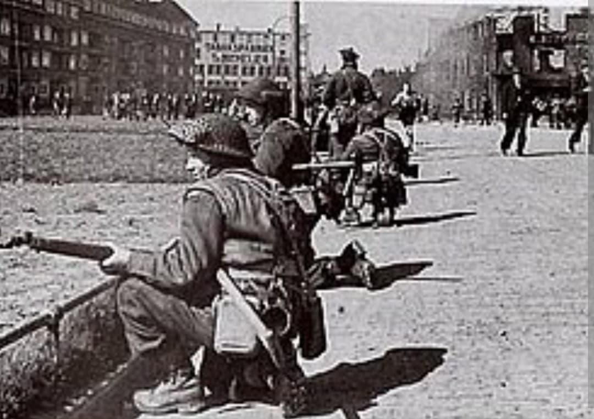
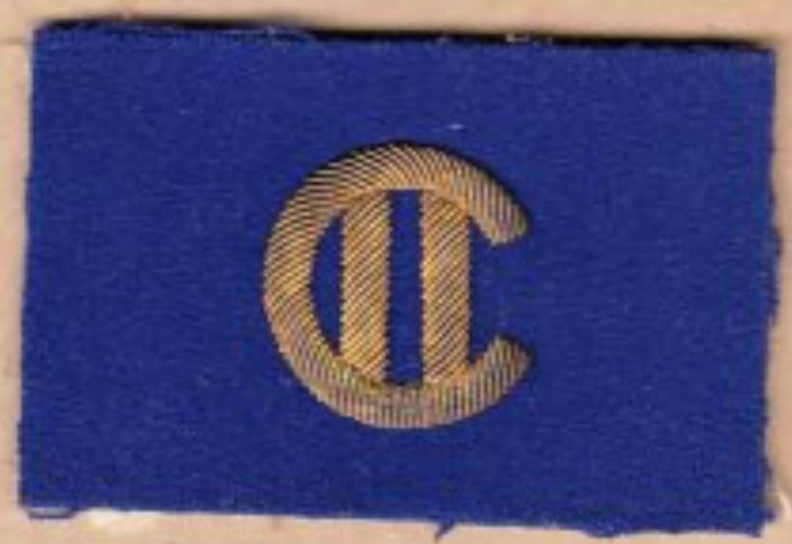
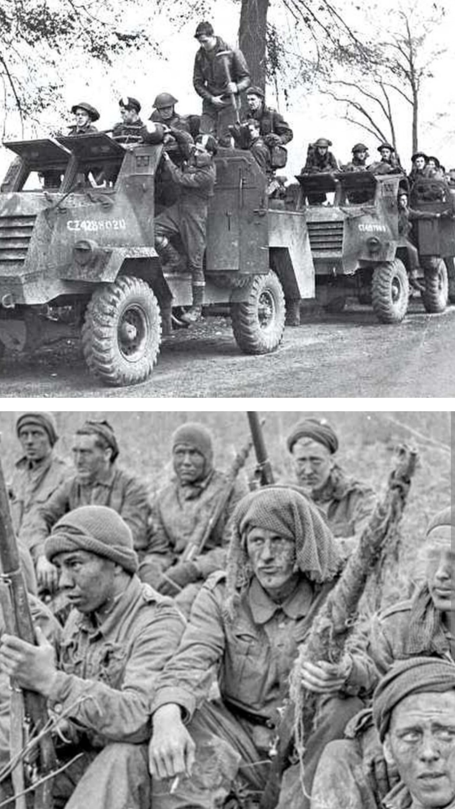

Du sacrifice héroïque de Dieppe aux victoires décisives de Normandie, de la bataille de l'Escaut et de la libération du Nord-Ouest de l'Europe

La 2nd Canadian Infantry Division (2e division d'infanterie canadienne) est l'une des formations les plus éprouvées et emblématiques des Forces armées canadiennes de la Seconde Guerre mondiale.
Mondialement connue pour avoir constitué le cœur des troupes d'assaut lors du dramatique **raid de Dieppe** en août 1942 (Opération Jubilee), la division s'est reconstruite avec une détermination exemplaire pour devenir, dès juillet 1944, l'une des unités clés du 2e Corps canadien en Normandie, en Belgique et aux Pays-Bas.
Mobilisée en septembre 1939 et arrivée en Grande-Bretagne en 1940, la division regroupe des régiments prestigieux issus de diverses provinces canadiennes (tels que Les Black Watch du Canada, Le Régiment de Maisonneuve, le Royal Hamilton Light Infantry ou les Calgary Highlanders).
Son insigne d'épaule distinctif se compose d'un rectangle bleu bleuet (*The Blue Patch*), perpétuant l'héritage de la 2e division canadienne de la Première Guerre mondiale.

Le **19 août 1942**, la 2e division canadienne mène l'assaut amphibie sur les plages galets de Dieppe et de ses environs (Puys, Pourville). Face à des fortifications allemandes intraitables et un soutien blindé et aérien insuffisant, le raid se transforme en un sanglant revers.
Sur plus de 4 900 Canadiens engagés, près de 3 367 sont tués, blessés ou faits prisonniers. Malgré cette tragédie, le sacrifice des hommes de la 2e division fournit aux Alliés des enseignements tactiques et techniques vitaux qui sauveront des milliers de vies lors du Débarquement de Normandie en 1944.

Débarquée en Normandie en juillet 1944 sous le commandement du major-général **Charles Foulkes**, la division est engagée dans les terribles combats au sud de Caen, notamment pour la prise de la **crête de Verrières**, puis dans la fermeture de la poche de Falaise.
En septembre 1944, symbole émouvant, la 2e division entre libératrice dans Dieppe avant de mener l'épique et meurtrière **bataille de l'Escaut** à l'automne pour désenclaver le port d'Anvers. Elle termine la guerre au cœur de l'Allemagne au printemps 1945.
Page du Musée HOP WW2 – Section Unités & Divisions